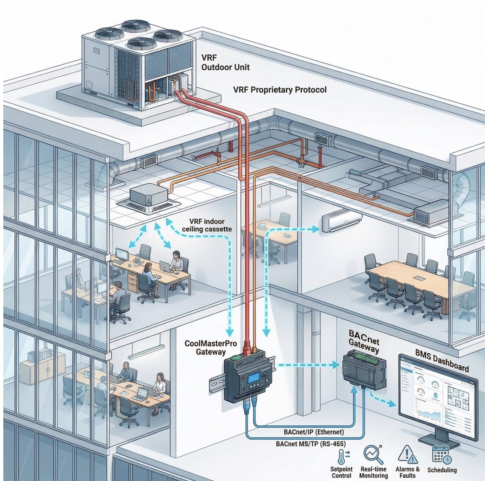
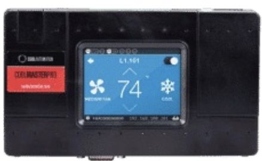
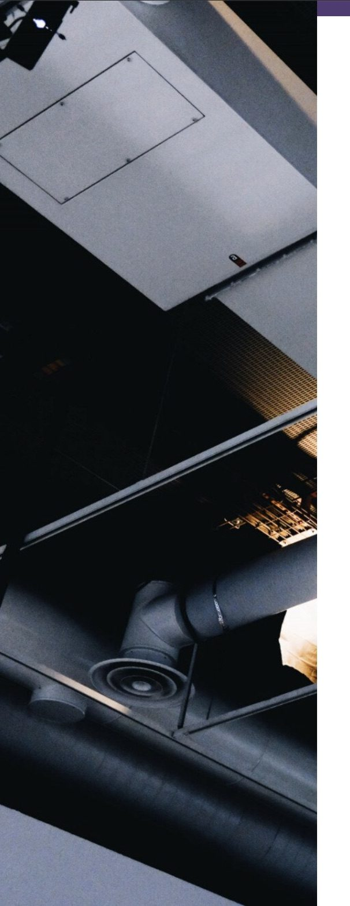

HVAC management
VRF control with CoolMasterPro
CoolMasterPro is a universal gateway that integrates VRF HVAC systems (Daikin, Mitsubishi, LG and more) with the BMS over BACnet — auto-discovering indoor units and exposing full control plus diagnostics for plug-and-play centralised monitoring, alarming and energy optimisation.
- On/off, mode, setpoint and fan-speed control
- BACnet / Modbus communication
- Scheduling for individual units
- Up to 255 connected units
Devices

